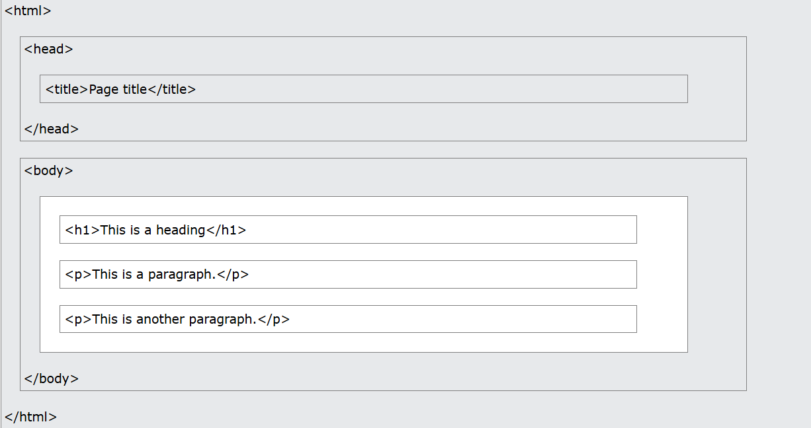

This is a paragraph.
This is aaa
paragraph with a line break.
This is a red paragraph.
This text is boldDo not forget to buy milk today.
My favorite color is blue red.
This is subscripted text.
This is superscripted text.
Here is a quote from WWF's website:
For 60 years, WWF has worked to help people and nature thrive. As the world's leading conservation organization, WWF works in nearly 100 countries. At every level, we collaborate with people around the world to develop and deliver innovative solutions that protect communities, wildlife, and the places in which they live.
WWF's goal is to: Build a future where people live in harmony with nature.
The WHO was founded in 1948.
Written by John Doe.The Scream by Edvard Munch. Painted in 1893.
This text will be written from right to left This is a link 